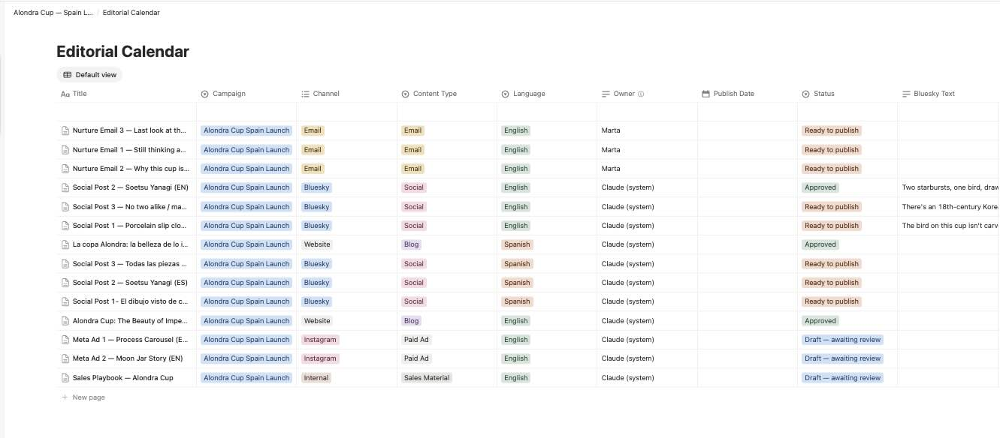
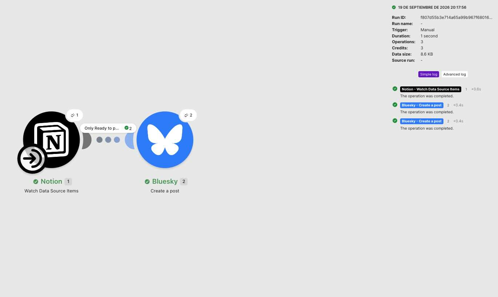

Five stages, from a product brief to a published, bilingual post — with a human editor as the QA layer.
This project builds on pottery-ai-content-pipeline — the first system I built. This time the brief is a real product launch: the Alondra Cup, entering the Spanish market, with a fictional content team.
Claude drafts and translates. I fact-check, correct, and approve.
Five stages. Human review sits in the middle, not at the edges — it's the step that catches what Claude gets wrong.
All built and tested live.
The text automation was not the hard part. Attaching a photo to an automated Bluesky post was.

